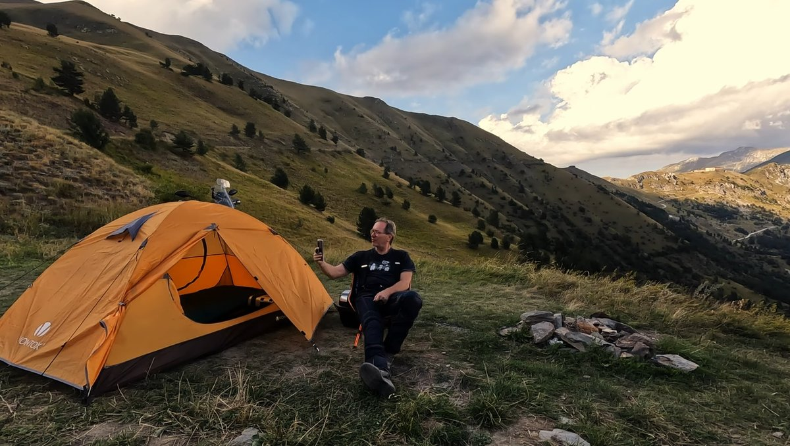
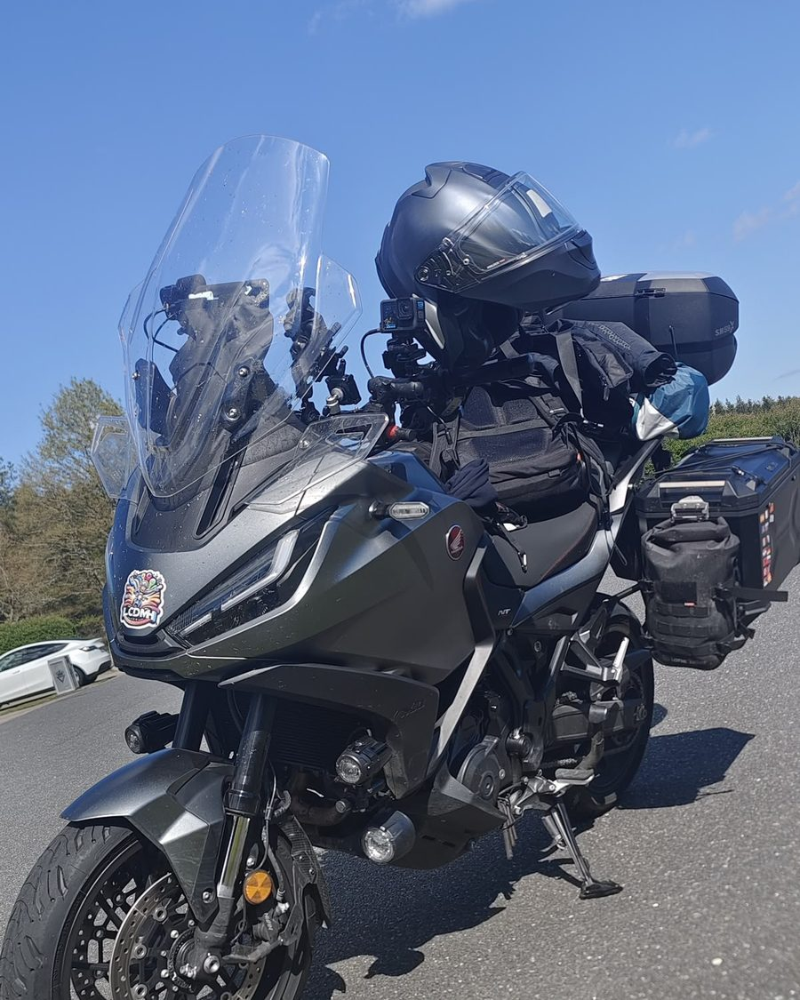
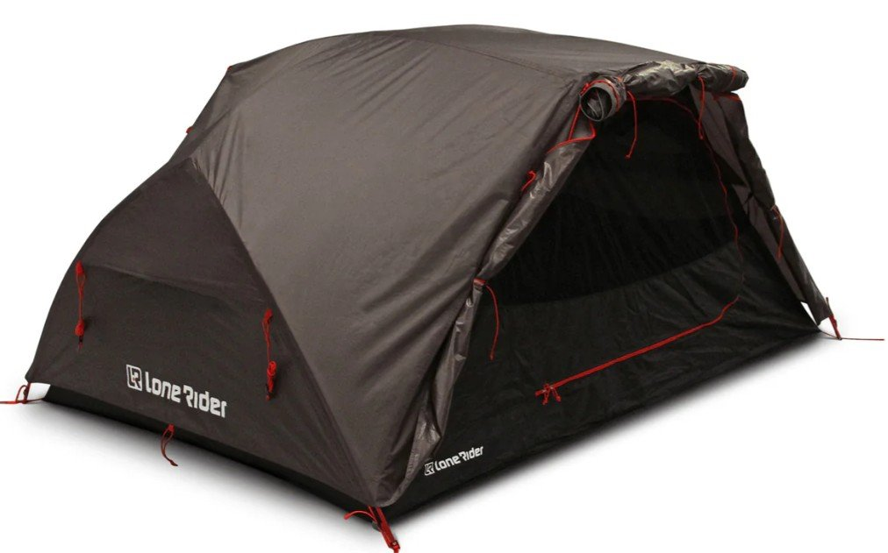
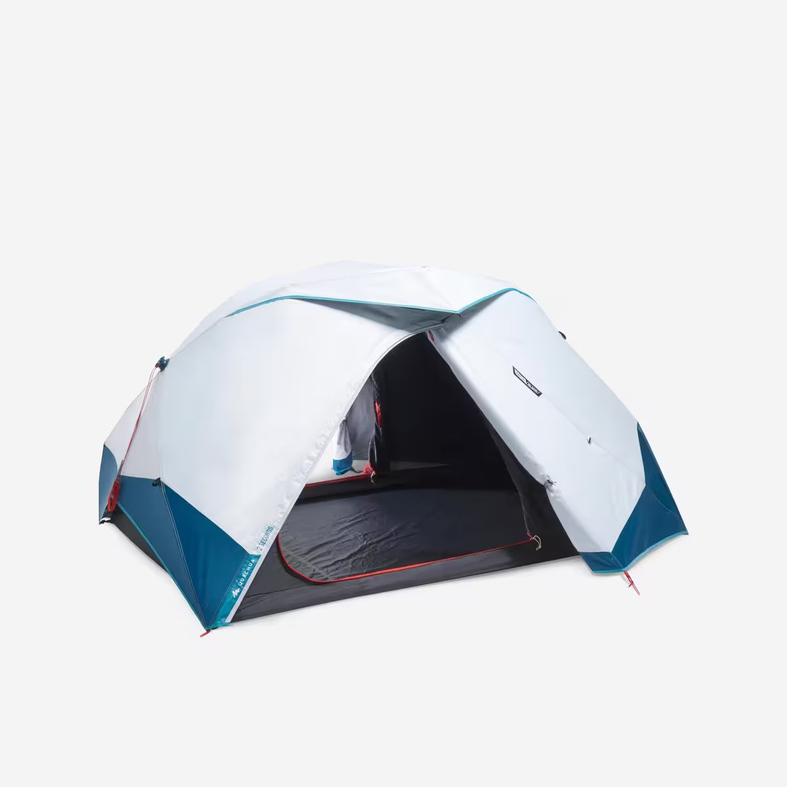
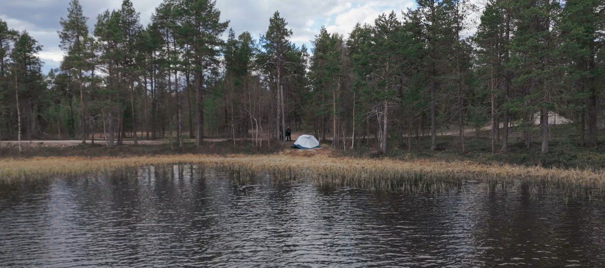

Bonjour à toutes et bonjour à tous ! Si tu cherches à faire du bivouac moto et que tu te poses les bonnes questions, tu es au bon endroit. Eh bien, je vais tenter, au travers de cet article, de répondre à toutes ces questions. Avec du vécu, du matériel testé sur des milliers de kilomètres — du Cap Nord jusqu'à la Cappadoce — et sans te raconter d'histoires.
C'est parti !
Est-ce qu'avoir une grosse moto, c'est mieux pour faire un road trip ? La question mérite d'être posée, et la réponse, à mon avis, il n'y en a peut-être pas vraiment une seule.
Comme vous le savez certainement — pour ceux qui me suivent en tout cas — au moment où j'écris cet article, en avril 2026, je n'ai que 4 ans de permis, mais j'ai déjà fait énormément de kilomètres. Forcément, sur ces 70 000 km, j'ai rencontré du monde. Beaucoup de monde.
Et quand la question se pose de savoir si une grosse moto, c'est mieux qu'une petite pour faire des road trips, eh bien franchement, j'ai rencontré des gens qui traversaient des pays en Vespa, et un Japonais qui faisait le tour du monde avec une 125 cm³.
Alors non, je ne pense pas que la cylindrée de la moto t'empêche d'aller loin.
Il est indéniable qu'une moto confortable va te faciliter le voyage. Des facilités de dépassement notamment, une meilleure capacité à avaler les kilomètres d'autoroute, peut-être plus de facilité face aux intempéries et au vent violent de face.
Mais je pense sincèrement que n'importe quel road trip peut se faire avec n'importe quelle moto.
Mon premier road trip — le tour des parcs naturels de France — je l'ai fait avec une Benelli TRK 502. Et à aucun moment je n'ai eu de regrets. Si tu débutes, ne laisse pas ta cylindrée décider pour toi : pars avec ce que tu as sous la main.
Aujourd'hui, je voyage avec une Honda NT1100. Évidemment, cette puissance et ce confort apportent un agrément très appréciable lors des road trips longs. Mais en contrepartie, on va forcément exploser le budget.

Moto + 160 L de bagages + bonhomme. La répartition des poids devient alors cruciale.
Rouler beaucoup avec une moto qui coûte cher — les pneus plus gros et plus chers, la consommation d'essence à l'avenant, l'entretien et les révisions qui vident le portefeuille plus vite — eh bien tu l'auras compris : ça finit par coûter très très cher.
Ne te pose pas trop la question de la cylindrée.Retour au sommaire
Pars avec ce que tu as. L'essentiel, c'est de partir.
La tente moto, c'est LE poste où il ne faut pas se louper. Une tente qui prend l'eau, qui se casse la figure au premier coup de vent ou qui met 25 minutes à monter après 500 km de selle, c'est une nuit gâchée.
1. Le poids et l'encombrement plié — tu dois pouvoir la caser quelque part entre deux valises. 2. La rapidité de montage — après 8, 10 ou 12 h de route, tu as envie d'une toile qui se plante en 5 minutes, pas en 25.
Personnellement, mon choix se porte sur une tente rapide à monter. Il faut dire que je suis un gros rouleur et souvent je vais avoir des journées de route de 8, 10 voire 12 h de route. Et quand j'arrive, c'est vrai que j'ai envie de me poser rapidement et donc forcément d'avoir une tente rapide à monter.


La Lone Rider ADV a cette grande ouverture de face qui fait toute la différence. Une petite ouverture va être forcément beaucoup plus compliquée lorsqu'on va devoir rentrer tout le matériel dans la toile, et ça peut devenir très vite fastidieux.
La Décathlon Fresh & Black, je l'ai utilisée pour mon dernier road trip en Norvège car je voulais une toile de tente qui bloque la lumière. Ce qui, dans les faits, se traduit par l'obscurité d'une salle de cinéma. Contrepartie : tu es toujours obligé d'avoir de la lumière dans la toile de tente et ça finalement, ce n'est pas top non plus.
Si tu hésites entre ces deux tentes : la Lone Rider ADV pour la route, la Décathlon Fresh & Black pour les destinations nordiques où tu veux récupérer même à 3 h du matin avec le soleil de minuit.
Bien sûr, au fil des jours, la météo sera changeante. Et il faut être prêt. Il y a des pays, comme la Norvège, où tu dois t'en souvenir : il faut être prêt à tout, du soleil le matin à la grêle l'après-midi.
Le froid peut te mordre,
mais on se protège toujours plus facilement du froid que du chaud.
Je me rappelle par exemple de mon voyage en traversant l'Europe jusqu'à l'Asie, parti d'Annecy pour arriver en Cappadoce. La chaleur était telle par moments qu'au bout de quelques jours, mes forces ont littéralement fondu comme neige au soleil.

à l'ombre en Cappadoce. La carrosserie des voitures renvoyait une chaleur absolument incroyable, impossible de respirer.
Impossible aussi de rouler trop déshabillé à moto. Notre équipement et notre sécurité, c'est lui qui nous préserve, c'est lui qui veille sur nous.
3 paires de gants dans les sacoches : gants d'été (40 % de mon usage), gants mi-saison (40 %), gants d'hiver chauffants (20 % — mais indispensables sur les plateaux scandinaves à 0 °C).
☝️ Ceci est un aperçu montrant 3 chapitres redesignés.
Les 17 autres chapitres seront traités de la même façon.